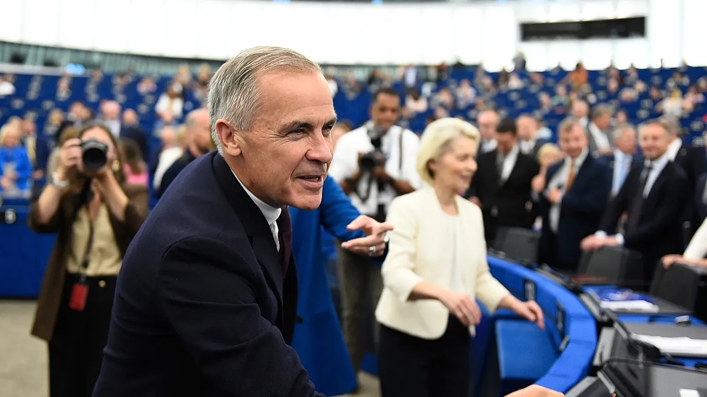

Proposal for Canada to become the EU's first associate member
2026, September 17

Proposal for Canada to become the EU's first associate member
2026, September 17
Canada
Mark Carney, Canada's prime minister, said on September 17 that he welcomes the proposal for Canada to become the EU's first associate member. He stressed that Canada is not seeking full EU membership.The proposal came from European Commission President Ursula von der Leyen on September 16. She wants Canada and the EU to move beyond their existing free-trade relationship toward a much broader strategic partnership.
Areas being discussed include defence, critical minerals, energy, artificial intelligence, quantum computing, digital trade, manufacturing and Arctic cooperation.
Importantly, there is currently no formal “associate membership” category under EU treaties, so the precise rights and obligations still have to be negotiated.
Carney said the eventual arrangement would be subject to debate and a vote in Canada's Parliament.
The proposal comes as Canada seeks to reduce its economic dependence on the United States following worsening Canada–US trade relations.
US President Donald Trump has criticised the idea and threatened potentially significant tariffs against Europe if he considers the arrangement hostile. The European Commission says the proposal is not directed against the US.
What would “associate member” actually mean?
That's the big unanswered question.
It would not automatically mean Canada joins the EU, adopts the euro, becomes part of the EU's political institutions, or enters the EU single market. The details would have to be negotiated.
One possible model could be a much deeper relationship than CETA (the existing Canada–EU trade agreement), giving Canada structured access to European programmes and cooperation in areas such as research, technology, defence and energy while Canada retains its sovereignty.
Carney has also proposed Canadian participation in programmes such as Erasmus+ and Horizon Europe, alongside cooperation on youth mobility and digital trade.
So, in simple terms: Canada isn't asking to become European; it is exploring a formal relationship that could bring Canada substantially closer to Europe economically, politically and strategically while remaining outside the EU.